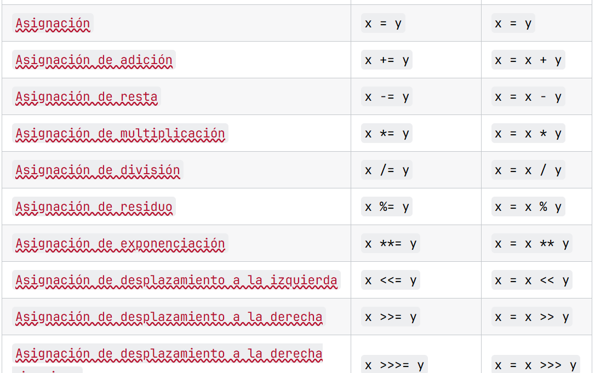

operadores de asignacion
Los operadores de asignación en JavaScript se utilizan para asignar valores a las variables. El operador de asignación más común es el signo igual (=), que asigna el valor del lado derecho a la variable del lado izquierdo. Además del operador de asignación simple, existen varios operadores de asignación compuesta que combinan la asignación con otras operaciones aritméticas o bit a bit. Aquí hay una lista de los operadores de asignación más comunes en JavaScript:
